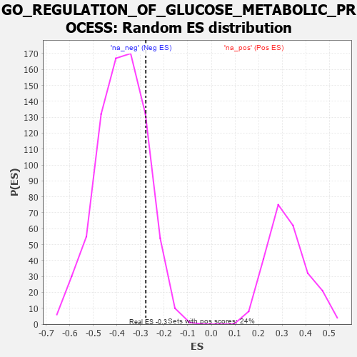

| | | Dataset | 7d |
| Phenotype | NoPhenotypeAvailable |
| Upregulated in class | na_neg |
| GeneSet | GO_REGULATION_OF_GLUCOSE_METABOLIC_PROCESS |
| Enrichment Score (ES) | -0.27788556 |
| Normalized Enrichment Score (NES) | -0.7276249 |
| Nominal p-value | 0.8441215 |
| FDR q-value | 1.0 |
| FWER p-Value | 1.0 |
Table: GSEA Results Summary
 Fig 1: Enrichment plot: GO_REGULATION_OF_GLUCOSE_METABOLIC_PROCESS
Fig 1: Enrichment plot: GO_REGULATION_OF_GLUCOSE_METABOLIC_PROCESS
Profile of the Running ES Score & Positions of GeneSet Members on the Rank Ordered List
| PROBE | GENE SYMBOL | GENE_TITLE | RANK IN GENE LIST | RANK METRIC SCORE | RUNNING ES | CORE ENRICHMENT | | 1 | IRS1 | | | 98 | 1.659 | 0.1145 | No |
| 2 | GSK3A | | | 351 | 0.745 | 0.1398 | No |
| 3 | AKT1 | | | 1040 | 0.476 | 0.0896 | No |
| 4 | FOXK2 | | | 1081 | 0.467 | 0.1203 | No |
| 5 | SRC | | | 1128 | 0.459 | 0.1496 | No |
| 6 | GPT | | | 1488 | 0.392 | 0.1343 | No |
| 7 | DDB1 | | | 1642 | 0.366 | 0.1431 | No |
| 8 | FOXK1 | | | 1859 | 0.326 | 0.1408 | No |
| 9 | GNMT | | | 2261 | 0.266 | 0.1107 | No |
| 10 | KAT2B | | | 2502 | 0.226 | 0.0978 | No |
| 11 | RORA | | | 2730 | 0.193 | 0.0840 | No |
| 12 | WDR5 | | | 2892 | 0.168 | 0.0766 | No |
| 13 | MAEA | | | 3048 | 0.143 | 0.0680 | No |
| 14 | TIGAR | | | 3091 | 0.138 | 0.0733 | No |
| 15 | COX11 | | | 3256 | 0.113 | 0.0613 | No |
| 16 | LCMT1 | | | 3576 | 0.063 | 0.0260 | No |
| 17 | DGKQ | | | 3856 | 0.020 | -0.0076 | No |
| 18 | MTOR | | | 4114 | -0.025 | -0.0381 | No |
| 19 | CLK2 | | | 4628 | -0.124 | -0.0932 | No |
| 20 | EP300 | | | 4941 | -0.186 | -0.1182 | No |
| 21 | ACTN3 | | | 5486 | -0.315 | -0.1626 | No |
| 22 | INSR | | | 6204 | -0.538 | -0.2116 | Yes |
| 23 | RGN | | | 6233 | -0.547 | -0.1733 | Yes |
| 24 | DYRK2 | | | 6533 | -0.677 | -0.1591 | Yes |
| 25 | GSK3B | | | 6719 | -0.768 | -0.1236 | Yes |
| 26 | PASK | | | 7946 | -3.674 | 0.0031 | Yes |
Table: GSEA details [plain text format]

Fig 2: GO_REGULATION_OF_GLUCOSE_METABOLIC_PROCESS: Random ES distribution
Gene set null distribution of ES for GO_REGULATION_OF_GLUCOSE_METABOLIC_PROCESS